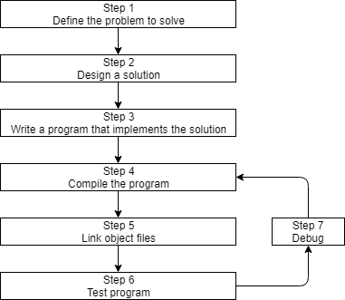

Before we can write and execute our first C++ program, we need to understand in more detail how C++ programs get developed. Here is a graphic outlining a simplistic approach:

Step 1: Define the problem that you would like to solve
This is the “what” step, where you figure out what problem you are intending to solve. Coming up with the initial idea for what you would like to program can be the easiest step, or the hardest. But conceptually, it is the simplest. All you need is an idea that can be well defined, and you’re ready for the next step.
Here are a few examples:
- “I want to write a program that will allow me to enter many numbers, then calculates the average.”
- “I want to write a program that generates a 2d maze and lets the user navigate through it. The user wins if they reach the end.”
- “I want to write a program that reads in a file of stock prices and predicts whether the stock will go up or down.”
Step 2: Determine how you are going to solve the problem
This is the “how” step, where you determine how you are going to solve the problem you came up with in step 1. It is also the step that is most neglected in software development. The crux of the issue is that there are many ways to solve a problem -- however, some of these solutions are good and some of them are bad. Too often, a programmer will get an idea, sit down, and immediately start coding a solution. This often generates a solution that falls into the bad category.
Typically, good solutions have the following characteristics:
- They are straightforward (not overly complicated or confusing).
- They are well documented (especially around any assumptions being made or limitations).
- They are built modularly, so parts can be reused or changed later without impacting other parts of the program.
- They can recover gracefully or give useful error messages when something unexpected happens.
When you sit down and start coding right away, you’re typically thinking “I want to do <something>”, so you implement the solution that gets you there the fastest. This can lead to programs that are fragile, hard to change or extend later, or have lots of bugs. A bug is any kind of programming error that prevents the program from operating correctly.
As an aside…
The term bug was first used by Thomas Edison back in the 1870s! However, the term was popularized in the 1940s when engineers found an actual moth stuck in the hardware of an early computer, causing a short circuit. Both the log book in which the error was reported and the moth are now part of the Smithsonian Museum of American History. It can be viewed here.
Various studies have shown that on complex software systems, only 10-40% of a programmer’s time is actually spent writing the initial program. The other 60-90% is spent on maintenance, which can consist of debugging (removing bugs), updates to cope with changes in the environment (e.g. to run on a new OS version), enhancements (minor changes to improve usability or capability), or internal improvements (to increase reliability or maintainability)1.
Consequently, it’s worth your time to spend a little extra time up front (before you start coding) thinking about the best way to tackle a problem, what assumptions you are making, and how you might plan for the future, in order to save yourself a lot of time and trouble down the road.
We’ll talk more about how to effectively design solutions to problems in a future lesson.
Step 3: Write the program
In order to write the program, we need two things: First, we need knowledge of a programming language -- that’s what these tutorials are for! Second, we need a text editor to write and save our C++ programs. The set of C++ instructions that we input into the text editor is called the program’s source code (often shortened to just code). It’s possible to write a program using any text editor you want, even something as simple as Windows’ notepad or Unix’s vi or pico.
A program typed into a basic text editor would look something like this:
#include <iostream>
int main()
{
std::cout << "Here is some text.";
return 0;
}
However, we strongly urge you to use an editor that is designed for programming (called a code editor). Don’t worry if you don’t have one yet. We’ll cover how to install a code editor shortly.
A typical editor designed for coding has a few features that make programming much easier, including:
- Line numbering. Line numbering is useful when the compiler gives us an error, as a typical compiler error will state: some error code/message, line 64. Without an editor that shows line numbers, finding line 64 can be a real hassle.
- Syntax highlighting and coloring. Syntax highlighting and coloring changes the color of various parts of your program to make it easier to identify the different components of your program.
- An unambiguous, fixed-width font (often called a “monospace font”). Non-programming fonts often make it hard to distinguish between the number 0 and the letter O, or between the number 1, the letter l (lower case L), and the letter I (upper case i). A good programming font will ensure these symbols are visually differentiated in order to ensure one isn’t accidentally used in place of the other. All code editors should have this enabled by default, but a standard text editor might not. Using a fixed-width font (where all symbols have the same width) makes it easier to properly format and align your code.
Here’s an example of a C++ program with line numbering, syntax highlighting, and a fixed-width font:
#include <iostream>
int main()
{
std::cout << "Here is some text.";
return 0;
}Note how much easier this is to understand than the non-highlighted version. The source code we show in this tutorial will have both line numbering and syntax highlighting to make that code easier to follow.
Tip
Coding Font and Programming Fonts both have neat tools that allow you to compare different coding fonts to see which ones you like best.
For advanced readers
Because source code is written using ASCII characters, programming languages use a certain amount of ASCII art to represent mathematical concepts. For example, ≠ is not part of the ASCII character set, so programming languages typically use != to represent mathematical inequality instead.
Some programming fonts, such as Fira Code, use ligatures to combine such “art” back into a single character. For example, instead of displaying !=, Fira Code will display ≠ (using the same width as the two-character version). Some people find this easier to read, others prefer sticking with a more literal interpretation of the underlying characters.
Many simple C++ programs only have one source code file, but complex C++ programs can have hundreds or even thousands of source code files.
Each source code file in your program will need to be saved to disk, which means each source code file needs a filename. C++ does not have any requirements for naming files. However, the de-facto standard is to name the first/primary source file created for a program main.cpp. The filename (main) makes it easy to determine which is the primary source code file, and the .cpp extension indicates that the file is a C++ source code file.
You may occasionally see the first/primary source code file named after the name of the program instead (e.g. calculator.cpp, poker.cpp). You may also occasionally see other extensions used (e.g. .cc or .cxx).
Best practice
Name the first/primary source code file in each program main.cpp. This makes it easy to determine which source code file is the primary one.
Once you’ve written your program, the next steps are to convert the source code into something that can be run, and then see whether it works! We’ll discuss those steps (4-7) in the next lesson.